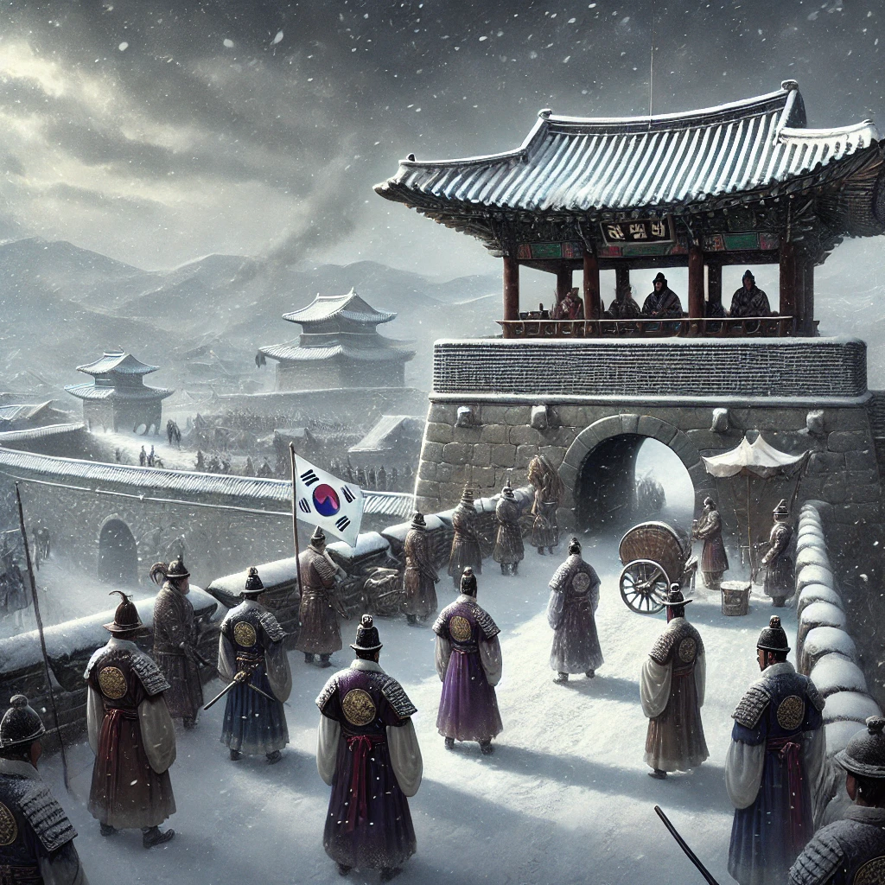

병자호란이라는 실제 사건을 김훈 특유의 문장력을 통해 더욱 몰입하여 읽을 수 있게 해주었던 책이다.
청나라를 코앞에 두고 조정에서 해야했던 고민들과 논쟁이 특히 더 생생하게 잘 드러나있었고, 그 속에 휘말려있는 백성들의 삶 또한 잘 비추고 있었다.
이 책은 그 당시 뿐만 아니라 현재를 살아가는 우리들에게도 리더로서의 선택, 명분과 현실 속 갈등과 같은 많은 시사점을 남기는 작품이다.

감상평에 대한 AI 감정평가
이 독후감은 김훈의 『남한산성』에 대해 깊은 몰입과 감탄을 담고 있으며, 감정적으로는 진지하고 숙고하는 태도가 강하게 드러난다.
✨ 몰입감: 저자의 문장력을 강조하며, 독자가 실제로 책을 읽으며 강하게 빠져들었음을 표현하고 있다.
✨ 감탄과 공감: 당시 조정의 논쟁과 백성들의 삶이 생생하게 묘사되었다는 점을 높이 평가하며, 책의 묘사력에 대한 감탄이 담겨 있다.
✨ 시사점 강조: 단순한 역사소설이 아니라 현대에도 적용될 수 있는 리더십과 갈등의 문제를 다루고 있음을 짚으며, 깊은 사유의 흔적이 느껴진다.
전체적으로 진중하고 숙연한 감상이며, 역사적 사건을 통해 현재를 돌아보는 성찰적인 태도가 돋보이는 글이다.